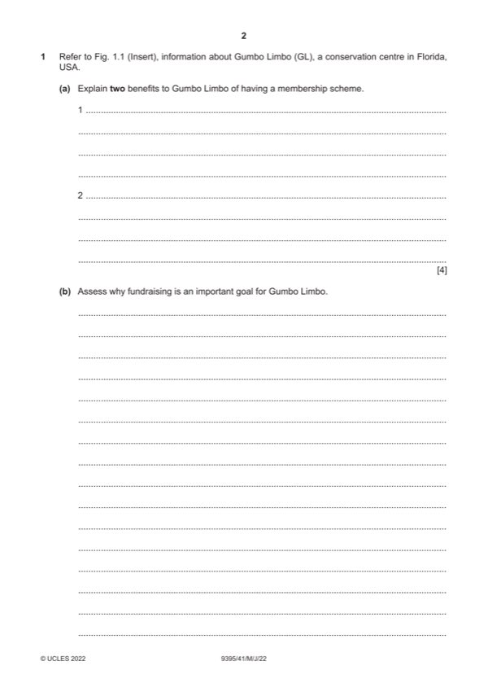

Question 1

Original paper page 2
Part 1(a) — solution
- The scheme allows GL to access more funds [1] money will come in on
- The scheme helps to develop a more committed group of supporters [1]
- GL can promote awareness of their conservation issues to a dedicated
- GL will gain a database of membership names and addresses [1] this
- GL can increase public awareness of coastal and marine ecosystems
Mark points
- The scheme allows GL to access more funds [1] money will come in on
- The scheme helps to develop a more committed group of supporters [1]
- GL can promote awareness of their conservation issues to a dedicated
- GL will gain a database of membership names and addresses [1] this
- GL can increase public awareness of coastal and marine ecosystems
Part 1(b) — solution
Assess why fundraising is an important goal for Gumbo Limbo. 9
Candidates are expected to be aware of the NGOs and their roles and
priorities. They should be able to combine their knowledge with information
provided from Fig. 1.1.
Indicative content:
Fundraise:
To bring in more funds to continue the conservation work
To work in partnership with other organisations and raise awareness
To become self-sufficient and sustainable for the future of the organisation
Other relevant information should also be credited.
Mark according to the levels of response criteria below.
Level 3 (7–9 marks) can be awarded for assessment of the reasons why
fundraising is important for GL. Candidates effectively assess a range of
reasons and clearly attempt to weigh up their significance. There should be
sound and frequent evidence of thorough, detailed and accurate knowledge
and understanding of concepts and principles using appropriate
terminology.
Level 2 (4–6 marks) can be awarded for an explanation of a number of
possible reasons why fundraising is an important goal for GL. The answer is
relevant and accurate and shows reasonable knowledge and understanding
of concepts and principles with some use of specialist vocabulary.
Level 1 (1–3 marks) will identify/describe some possible reasons why
fundraising is an important goal. Information may be in the form of a list,
explanations are incomplete and arguments partial (if present). The answer
lacks coherent organisation and there is little or no attempt to assess. The
answer is basic and shows limited knowledge and understanding of
concepts and principles with limited use of appropriate terminology.
Level 0 (0 marks) No content worthy of credit.
2022 Page 6 of 10
9395/41 Cambridge International AS & A Level – Mark Scheme May/June 2022
Mark points
- Include the ideas shown in the solution above.
Part 1(c) — solution
Discuss the reasons why tourism might cause conflicts with 12
conservation projects such as Gumbo Limbo.
Candidates are expected to be aware of tourism strategies and negative
environmental impacts and to be able to evaluate the list provided in Fig. 1.1
Giving good reasons for their evaluations.
Indicative content:
Tourism might cause:
Damage to the landscape through trampling and erosion
Increase in litter, plastics, fires
Cause a disturbance to animal breeding patterns and habitats
Vandalism of sites
Traffic congestion and pollution (air, noise, water)
Extinction of animals
Depletion of resources
Other relevant information should also be credited.
Mark according to the levels of response criteria below.
Level 3 (9–12 marks) can be awarded for discussing a number of reasons
that tourism might cause conflict with conservation. Candidates effectively
discuss a range of reasons and attempt to weigh up the significance of
each. There is sound and frequent evidence of thorough, detailed and
accurate knowledge and understanding of concepts and principles using
appropriate terminology.
Level 2 (5–8 marks) can be awarded for an explanation/analysis of a
number of reasons that tourism might cause conflicts with conservation.
There may be some attempt to discuss the reasons. The answer is relevant
and shows reasonable knowledge and understanding of concepts and
principles with some use of specialist vocabulary.
Level 1 (1–4 marks) will identify/describe some reasons tourism might
cause conflicts with conservation. Information may be in the form of a list
explanations are incomplete and lack coherent organisation and arguments
are partial (if present). There is little or no attempt to discuss. The answer is
basic and shows limited knowledge and understanding of concepts and
principles with limited use of appropriate terminology. Answers may be
generic in their description.
Level 0 (0 marks) No content worthy of credit.
2022 Page 7 of 10
9395/41 Cambridge International AS & A Level – Mark Scheme May/June 2022
Mark points
- Include the ideas shown in the solution above.